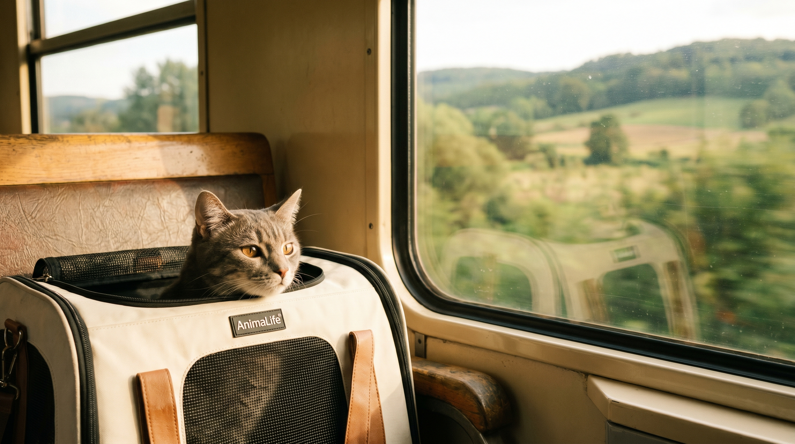

Путешествие с питомцем: чек-лист на поезд, самолёт и машину

20 мая 2026 · 10 минут чтения · Жизнь с питомцем
Первая поездка с кошкой или собакой — это почти всегда стресс для обоих. Не потому что путешествовать с питомцем сложно, а потому что большинство владельцев узнают о правилах и нюансах за день до отъезда. Собрали полный чек-лист с конкретными требованиями для каждого вида транспорта, списком документов и советами по снижению стресса в пути.
Документы: без чего нельзя выезжать
Независимо от вида транспорта, базовый пакет документов одинаковый.
Ветеринарный паспорт. Обязателен для кошек и собак. Содержит сведения о чипировании (если есть), прививках и обработках от паразитов. Если паспорта нет — его нужно оформить в любой ветеринарной клинике. Стоимость: 300-500 рублей.
Прививка от бешенства. Обязательна для перевозки любым транспортом на территории России. Требования: вакцинация должна быть проведена не ранее чем за 12 месяцев и не позднее чем за 30 дней до поездки. Котята и щенки допускаются к вакцинации от бешенства не ранее 3 месяцев — поэтому питомцев до 4 месяцев во многих перевозчиков не принимают вовсе.
Ветеринарное свидетельство (форма № 1-вет). Требуется при перевозке в другой регион. Выдаётся государственной ветеринарной клиникой за 5 дней до поездки и действует 5 дней. Частные клиники выдавать его не могут. Важно: если едете на дачу в соседний район — не нужно. Если меняете субъект федерации — обязательно.
Чип. Для внутренних поездок по России не обязателен, но крайне рекомендован — это единственный надёжный способ идентификации питомца при потере.
Поезд: правила РЖД 2025
РЖД допускает провоз домашних животных во всех видах вагонов, кроме вагонов-ресторанов и некоторых специальных вагонов. Актуальные правила:
- Мелкие животные (кошки, небольшие собаки, контейнер в сумме до 20 кг): перевозятся в купе, плацкарте и СВ в переноске или контейнере с надёжной застёжкой. Тариф: от 200 до 3 000 рублей в зависимости от расстояния.
- «Сапсан»: фиксированный тариф для мелких животных — 400 рублей. Обязательна переноска, которая помещается под сиденье или на полку.
- Крупные собаки: перевозятся в отдельном купе или в тамбуре (не более двух) с намордником и поводком. Необходимо выкупать всё купе целиком.
- Бронирование: билет на питомца оформляется одновременно с билетом на владельца. Онлайн — на сайте РЖД или в приложении.
Практические советы для поезда:
- Накройте переноску лёгкой тканью — снижает визуальный стресс
- Положите внутрь вещь с вашим запахом — это успокаивает
- Не кормите за 4-6 часов до отправления: так снижается риск укачивания и рвоты
- Воду давать небольшими порциями каждые 2-3 часа
- На длительных маршрутах (более 8 часов) — переносной лоток для кошки обязателен
Самолёт: главные правила авиаперевозки
Правила перевозки сильно варьируются от авиакомпании к авиакомпании. Но есть общие параметры, которые действуют у большинства российских перевозчиков.
В салоне (ручная кладь):
- Животное в переноске не должно превышать 8 кг (животное + контейнер) — у части авиакомпаний 5 кг
- Переноска должна помещаться под переднее сиденье
- Бронировать место для животного нужно заранее — на борту ограниченное количество мест для питомцев в салоне (обычно 2-4)
- Тариф: 2 000-5 000 рублей сверх стоимости билета в зависимости от направления
В багажном отсеке:
- Для животных тяжелее 8 кг (с переноской) — обязательный вариант
- Температура в багажном отсеке регулируется — это не «холодный трюм», современные самолёты обеспечивают комфортный режим
- Переноска (авиационная клетка) должна соответствовать стандарту IATA: жёсткие стенки, надёжные засовы, достаточно места для разворота
- Некоторые авиакомпании не принимают в багаж брахицефальные породы (мопс, французский бульдог, персидская кошка) — из-за рисков дыхательных нарушений под стрессом
За 2-3 дня до вылета: посетите ветеринара, получите справку об отсутствии карантинных заболеваний (для многих направлений обязательно). Уточните требования конкретной авиакомпании — они меняются.
🐾 Первая помощь — всегда под рукой
AnimaLife подскажет, что делать в тревожной ситуации с питомцем ещё до визита к врачу. Откройте в один тап.
Открыть AnimaLife → Открыть в MAX →
Машина: самый свободный транспорт — с нюансами
Правил меньше, чем в поезде и самолёте, но безопасность требует внимания.
- Переноска или автогамак — обязательно. Свободно перемещающаяся кошка или собака в машине — угроза для водителя. Животное на передних сиденьях — зона раскрытия подушки безопасности при ДТП.
- Кормление за 3-4 часа до поездки. Укачивание у животных — не редкость. Лёгкий голод снижает риск.
- Остановки каждые 2-3 часа. Кошке не нужно выходить на каждой остановке, но проветривание переноски и возможность попить воды — необходимы. Собаку в дальней дороге нужно выгуливать.
- Никогда не оставляйте питомца в закрытом авто летом. При температуре +25°C снаружи, температура в салоне за 30 минут достигает +50°C. Тепловой удар развивается быстро и смертелен.
- Чип и адресник — актуальны как никогда. На незнакомой территории потерявшееся животное найти гораздо сложнее, чем дома.
Как снизить стресс питомца в любом транспорте
Стресс от путешествия — основная проблема. Животное не понимает, что происходит, и реагирует на непривычные запахи, звуки и ограничение движения тревогой.
- Приучайте к переноске заранее. Оставьте её открытой дома за 2-3 недели до поездки, кладите туда лакомства и игрушки. Переноска должна стать «своим» местом, а не ловушкой.
- Феромоны. Адаптил (для собак) и Феливей (для кошек) — синтетические успокаивающие феромоны в форме спрея. Наносятся на переноску за 15-20 минут до поездки. Клиническая эффективность подтверждена несколькими независимыми исследованиями.
- Седация — только по назначению ветеринара. Не давайте животным человеческие успокоительные самостоятельно — они работают иначе и могут быть опасны при стрессе в замкнутом пространстве.
- Привычные запахи. Вещь с запахом владельца в переноске стабилизирует эмоциональный фон.
Чек-лист: что взять с собой
Документы:
- Ветеринарный паспорт
- Ветеринарное свидетельство ф. №1-вет (при смене региона)
- Ссылка на цифровую карточку питомца AnimaLife (все данные по здоровью)
Снаряжение:
- Переноска (размер: питомец должен стоять, разворачиваться, лечь)
- Знакомая пелёнка или плед с запахом дома
- Переносной лоток (кошка) / поводок и намордник (собака)
- Привычный корм на весь маршрут — не переходить на новый в дороге
- Ёмкость для воды и поилка
- Пакеты для уборки
- Влажные салфетки без спирта
Здоровье:
- Адресник с актуальным номером телефона
- Схема лечения, если питомец получает препараты
- Аптечка: перекись водорода, бинт, активированный уголь (только по рекомендации врача)
🐾 Экономьте на лишних визитах к врачу
Сначала спросите AI-ветеринара в AnimaLife — часто этого достаточно, чтобы понять, нужен ли визит к врачу.
Спросить бесплатно → Спросить в MAX →
Источники
- РЖД — Правила перевозки домашних животных (официальный сайт ОАО «РЖД»)
- IATA Live Animals Regulations — Container Requirements for Cats and Dogs
- WSAVA — Guidelines for the Vaccination of Dogs and Cats (требования к прививкам при перевозке)
- Россельхознадзор — Ветеринарные правила при перевозке животных по России